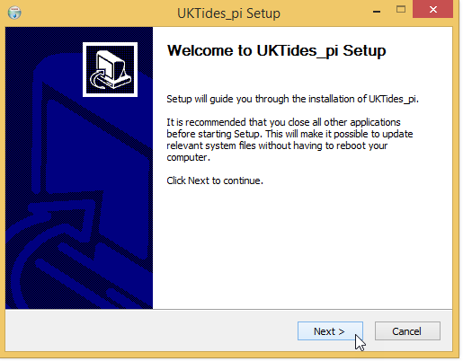
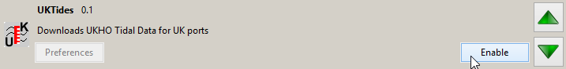
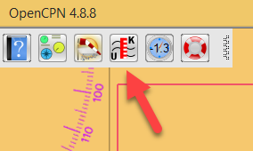
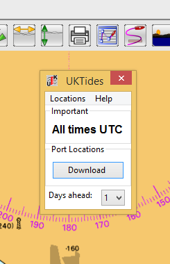
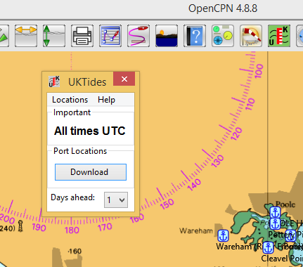
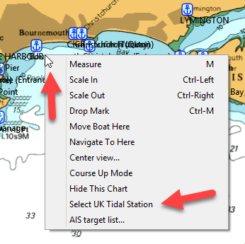
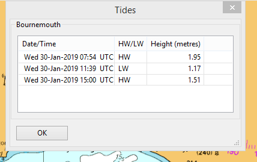
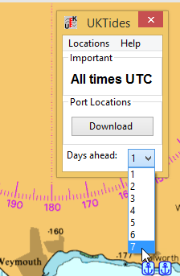
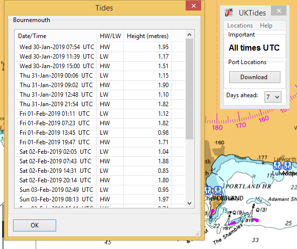

UK Tides
This plugin for OpenCPN can be used to download
tidal information from the UK Hydrographic Office (UKHO). Times of
high/low water are available for over 600 locations around the UK
(excluding the Channel Islands and the Isle of Man). Tidal data
for Port Erin (Isle of Man) and Saint Helier (Jersey) is available
from the main OpenCPN toolbar.
An Internet connection is needed to download the UKHO tidal
station locations ("Ports") and the data for those locations. No
data is saved by the plugin.
Install
The OpenCPN program should be closed before
starting the installation. Double-click on the installer '.exe'
file.

Follow the steps and finish installing.
Start OpenCPN and select Options->Plugins from the toolbar.
Enable the UK Tides plugin.

This will place the UK Tides button on the toolbar.

Using the plugin
Click the plugin button and the dialog will
open.

To show the locations of the tidal stations use
Locations->Download from the menubar or press the Download
button. The locations will appear on the chart, marked with the
anchor symbol.

To get the predictions right-click on the
chart close to a port location. A menu is shown.

Click on 'Select UK Tidal Station' and a table
of high and low water will show on the screen.

We have used the default of one day of predictions. Use the 'Days ahead' dropdown to
change the number of days predictions.


When the plugin dialog is closed the port locations remain on
the chart. If you need to remove these close and restart the
OpenCPN program.